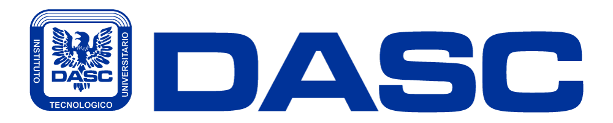

¿Para quién es?
Para aspirantes que están comparando carreras o necesitan una primera orientación antes de hablar con admisiones.

Test vocacional DASC
Orientación exploratoria basada en tus respuestas. No es un diagnóstico profesional ni determina una carrera ideal. Puedes explorar las recomendaciones sin contactar a admisiones.
Responde preguntas breves sobre intereses, habilidades, contexto y forma de aprender. El resultado cruza tu perfil con la oferta DASC y te propone carrera, modalidad y siguientes pasos.
Este test no solo pregunta qué te gusta. También considera tu tiempo disponible, tu forma de aprender, tus barreras y la modalidad que podría ayudarte a sostener mejor tu avance.
Para aspirantes que están comparando carreras o necesitan una primera orientación antes de hablar con admisiones.
Una carrera sugerida, modalidad recomendada, estilo de aprendizaje, nivel de riesgo y opciones cercanas dentro de DASC.
No. El test funciona en la página y al final puedes decidir si quieres contactar a admisiones por WhatsApp.